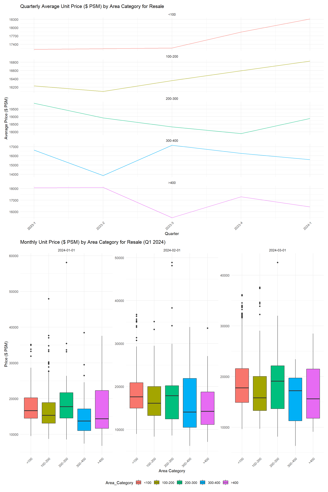
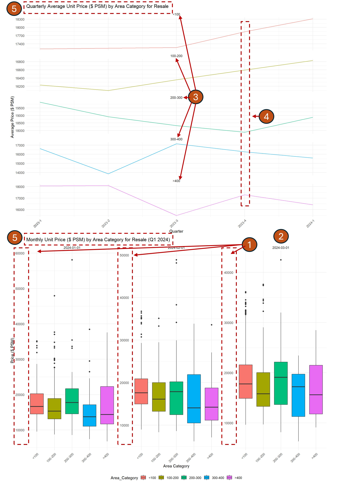
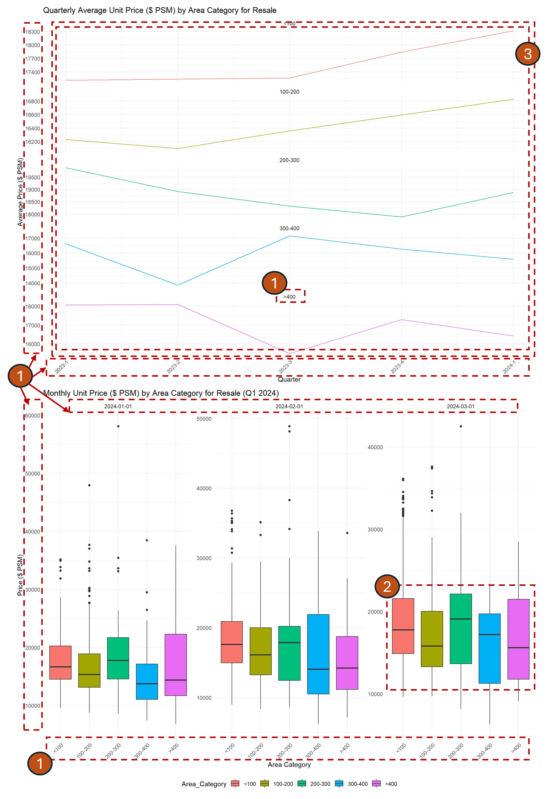
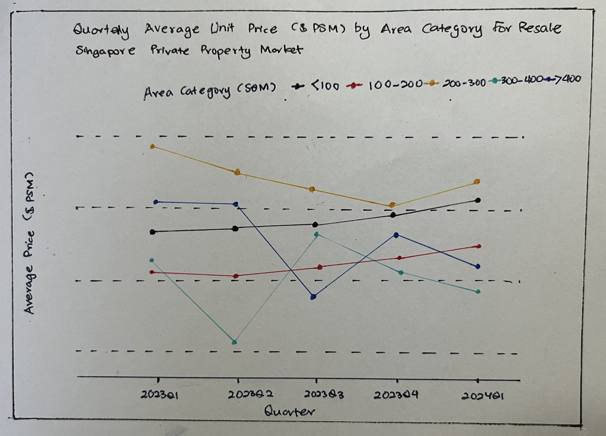
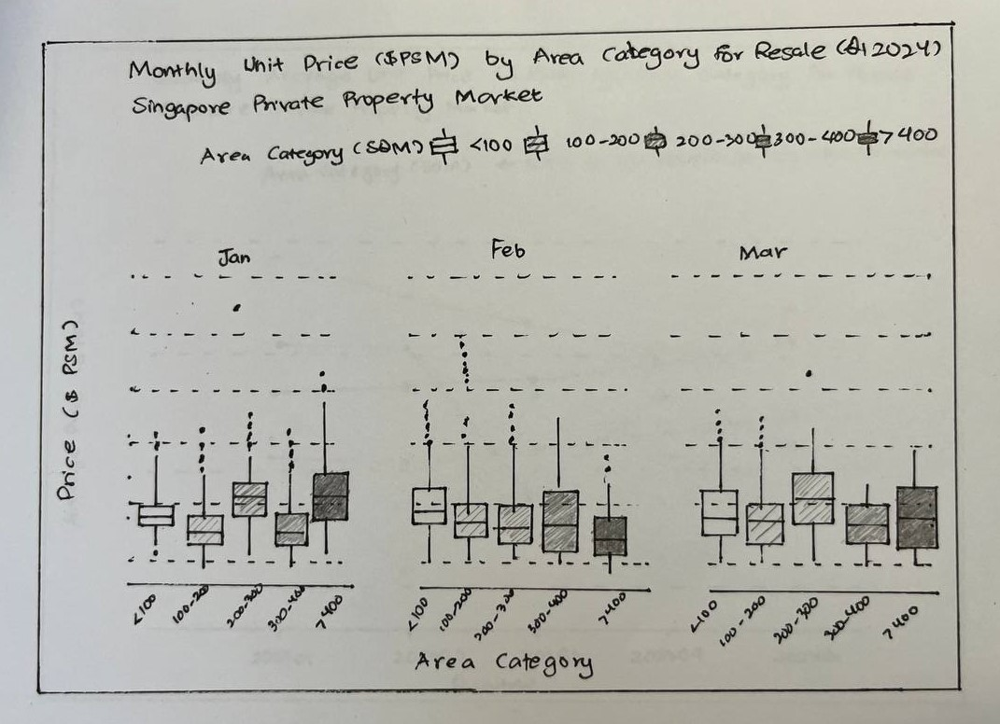
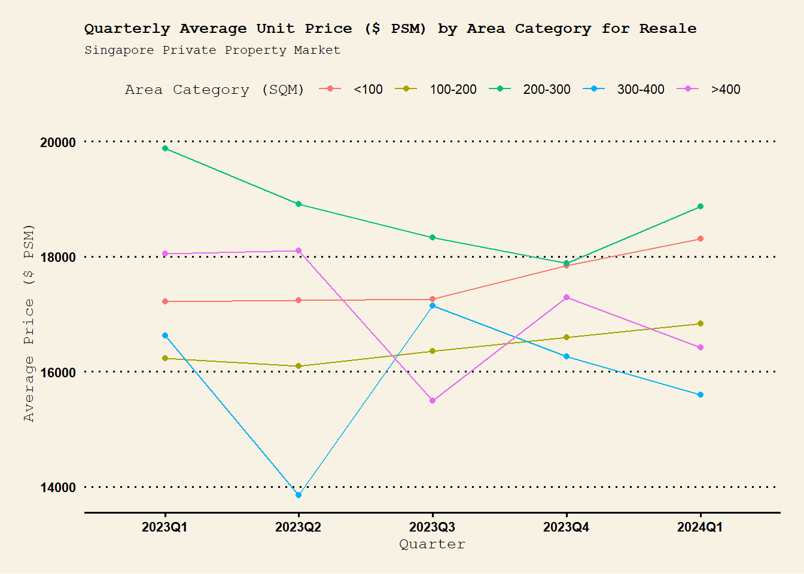
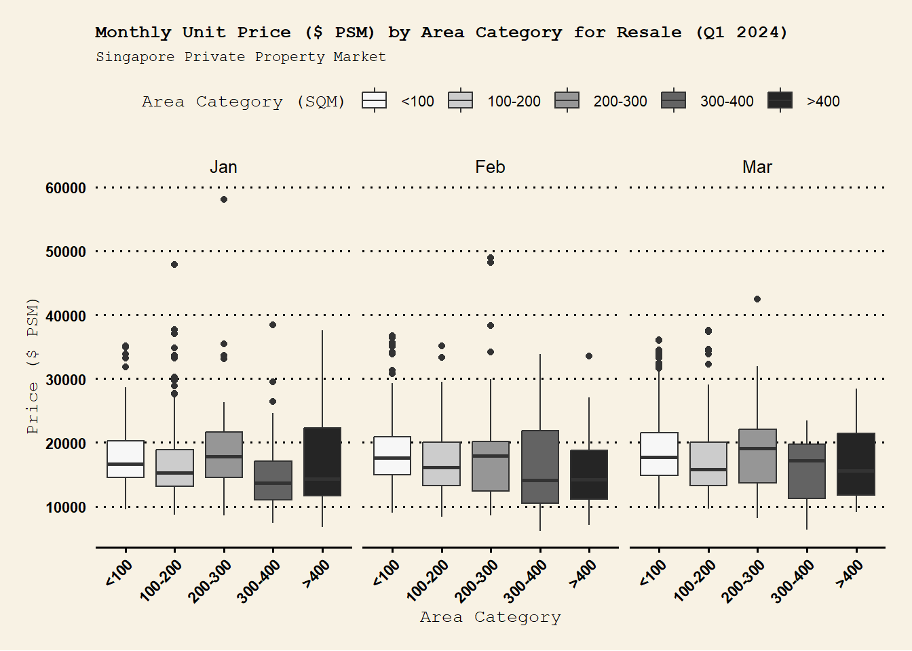

pacman::p_load(tidyverse,patchwork,ggthemes,hrbrthemes,RColorBrewer)Take-home Exercise 2
DataVis Makeover
Photo: https://www.propertyguru.com.sg/
1. Overview
1.1 Setting the scene
There are two major residential property market in Singapore, namely public and private housing. Public housing aims to meet the basic need of the general public with monthly household income less than or equal to S$14,000. For families with monthly household income more than S$14,000, they need to turn to the private residential market.
1.2 Task
This exercise aims to critic Data Visualization of Singapore Private Property market in terms of clarity and aesthetics. Prepare a sketch for the alternative design by using the data visualisation design principles and best practices. Finally, remake the original design by using ggplot2, ggplot2 extensions and tidyverse packages.
2. Getting Started
2.1 Installing and loading the required libraries
| Package | Description |
|---|---|
| tidyverse | Used data import, tidying, manipulation, and data visualization. Packages like readr, dplyr, lubridate are part of tidyverse. |
| patchwork | Used to combine individual ggplot into one graphic. |
| ggthemes | Provides ‘ggplot2’ themes and scales that replicate the look of plots by Edward Tufte, Stephen Few, ‘Fivethirtyeight’, ‘The Economist’, ‘Stata’, ‘Excel’, and ‘The Wall Street Journal’, among others. |
| hrbrthemes | A compilation of extra ‘ggplot2’ themes, scales and utilities, including a spell check function for plot label fields and an overall emphasis on typography. |
| RColorBrewer | The RColorBrewer package offers several color palette for R. |
The code chunk below uses p_load() function from pacman package to check if packages listed are already installed in the computer. The packages are loaded if they are found to be installed. If they are not installed, the function will proceed to install and load them into R environment.
2.2 Importing Data
Below code imports 5 .csv data from REALIS into R environment by utilizing read_csv() function of readr package. readr is part of tidyverse packages.
realis1 <- read_csv("data/ResidentialTransaction20240308160536.csv") #2023 Q1
realis2 <- read_csv("data/ResidentialTransaction20240308160736.csv") #2023 Q2
realis3 <- read_csv("data/ResidentialTransaction20240308161009.csv") #2023 Q3
realis4 <- read_csv("data/ResidentialTransaction20240308161109.csv") #2023 Q4
realis5 <- read_csv("data/ResidentialTransaction20240414220633.csv") #2024 Q12.3 Data Pre-processing
2.3.1 Combining all quarter data into one file
All residential property market data from REALIS by different quarters are merged into one file using rbind().
realis_merge <- rbind(realis1, realis2, realis3, realis4, realis5)2.3.2 Checking for duplicates
realis_merge[duplicated(realis_merge),]# A tibble: 0 × 21
# ℹ 21 variables: Project Name <chr>, Transacted Price ($) <dbl>,
# Area (SQFT) <dbl>, Unit Price ($ PSF) <dbl>, Sale Date <chr>,
# Address <chr>, Type of Sale <chr>, Type of Area <chr>, Area (SQM) <dbl>,
# Unit Price ($ PSM) <dbl>, Nett Price($) <chr>, Property Type <chr>,
# Number of Units <dbl>, Tenure <chr>, Completion Date <chr>,
# Purchaser Address Indicator <chr>, Postal Code <chr>,
# Postal District <chr>, Postal Sector <chr>, Planning Region <chr>, …No duplicated rows are present in the data based on duplicate check above using duplicated() function.
2.3.3 Checking for missing values (NA)
Use summary() to get quick overview of data and missing values. We can see only Area (SQM) column has 6 missing values (NA). This will be further taken care in later processing of this exercise.
summary(realis_merge) Project Name Transacted Price ($) Area (SQFT) Unit Price ($ PSF)
Length:26806 Min. : 440000 Min. : 322.9 Min. : 138
Class :character 1st Qu.: 1280000 1st Qu.: 721.2 1st Qu.:1384
Mode :character Median : 1660000 Median : 990.3 Median :1762
Mean : 2143286 Mean : 1191.6 Mean :1852
3rd Qu.: 2320000 3rd Qu.: 1302.4 3rd Qu.:2260
Max. :392180000 Max. :144883.4 Max. :5756
Sale Date Address Type of Sale Type of Area
Length:26806 Length:26806 Length:26806 Length:26806
Class :character Class :character Class :character Class :character
Mode :character Mode :character Mode :character Mode :character
Area (SQM) Unit Price ($ PSM) Nett Price($) Property Type
Min. : 30.0 Min. : 1484 Length:26806 Length:26806
1st Qu.: 67.0 1st Qu.:14893 Class :character Class :character
Median : 92.0 Median :18966 Mode :character Mode :character
Mean : 110.5 Mean :19930
3rd Qu.: 121.0 3rd Qu.:24327
Max. :13460.0 Max. :61962
NA's :6
Number of Units Tenure Completion Date
Min. : 1.000 Length:26806 Length:26806
1st Qu.: 1.000 Class :character Class :character
Median : 1.000 Mode :character Mode :character
Mean : 1.005
3rd Qu.: 1.000
Max. :60.000
Purchaser Address Indicator Postal Code Postal District
Length:26806 Length:26806 Length:26806
Class :character Class :character Class :character
Mode :character Mode :character Mode :character
Postal Sector Planning Region Planning Area
Length:26806 Length:26806 Length:26806
Class :character Class :character Class :character
Mode :character Mode :character Mode :character
2.3.4 Create Quarter and Month Column
Use as.Date() function to put Sale Date column into date object, specify format to ensure as.Date() recognize the content accurately as date. Use year(), quarter() and month() functions from lubridate package to extract year, quarter & month and use paste() to concatenate the strings.
realis_merge$"Sale Date" <- as.Date(realis_merge$"Sale Date", format = "%d %b %Y")
realis_merge$Quarter <- paste(year(realis_merge$"Sale Date"), "Q", quarter(realis_merge$"Sale Date"), sep="")
realis_merge$Month <- month(realis_merge$"Sale Date", label = TRUE)glimpse(realis_merge)Rows: 26,806
Columns: 23
$ `Project Name` <chr> "THE REEF AT KING'S DOCK", "URBAN TREASU…
$ `Transacted Price ($)` <dbl> 2317000, 1823500, 1421112, 1258112, 1280…
$ `Area (SQFT)` <dbl> 882.65, 882.65, 1076.40, 1033.34, 871.88…
$ `Unit Price ($ PSF)` <dbl> 2625, 2066, 1320, 1218, 1468, 1767, 1095…
$ `Sale Date` <date> 2023-01-01, 2023-01-02, 2023-01-02, 202…
$ Address <chr> "12 HARBOURFRONT AVENUE #05-32", "205 JA…
$ `Type of Sale` <chr> "New Sale", "New Sale", "New Sale", "New…
$ `Type of Area` <chr> "Strata", "Strata", "Strata", "Strata", …
$ `Area (SQM)` <dbl> 82.0, 82.0, 100.0, 96.0, 81.0, 308.7, 42…
$ `Unit Price ($ PSM)` <dbl> 28256, 22238, 14211, 13105, 15802, 19015…
$ `Nett Price($)` <chr> "-", "-", "-", "-", "-", "-", "-", "-", …
$ `Property Type` <chr> "Condominium", "Condominium", "Executive…
$ `Number of Units` <dbl> 1, 1, 1, 1, 1, 1, 1, 1, 1, 1, 1, 1, 1, 1…
$ Tenure <chr> "99 yrs from 12/01/2021", "Freehold", "9…
$ `Completion Date` <chr> "Uncompleted", "Uncompleted", "Uncomplet…
$ `Purchaser Address Indicator` <chr> "HDB", "Private", "HDB", "HDB", "HDB", "…
$ `Postal Code` <chr> "097996", "419535", "269343", "269294", …
$ `Postal District` <chr> "04", "14", "27", "27", "28", "19", "10"…
$ `Postal Sector` <chr> "09", "41", "26", "26", "79", "54", "27"…
$ `Planning Region` <chr> "Central Region", "East Region", "North …
$ `Planning Area` <chr> "Bukit Merah", "Bedok", "Yishun", "Yishu…
$ Quarter <chr> "2023Q1", "2023Q1", "2023Q1", "2023Q1", …
$ Month <ord> Jan, Jan, Jan, Jan, Jan, Jan, Jan, Jan, …2.3.5 Create Area Category Column
Use mutate(), ifelse() and is.na() to replace NA (missing values) with 0. Next, use mutate() and cut() functions to create area Category column (“<100”, “100-200”, “200-300”, “300-400”, “>400”).
realis_merge <- realis_merge %>%
mutate(
`Area (SQM)` = ifelse(is.na(`Area (SQM)`), 0, `Area (SQM)`) # Dealing with NA values
)
realis_merge <- realis_merge %>%
mutate(
`Area Category (SQM)` = cut(
`Area (SQM)`,
breaks = c(0, 100, 200, 300, 400, Inf),
labels = c("<100", "100-200", "200-300", "300-400", ">400"),
include.lowest = TRUE
)
)glimpse(realis_merge)Rows: 26,806
Columns: 24
$ `Project Name` <chr> "THE REEF AT KING'S DOCK", "URBAN TREASU…
$ `Transacted Price ($)` <dbl> 2317000, 1823500, 1421112, 1258112, 1280…
$ `Area (SQFT)` <dbl> 882.65, 882.65, 1076.40, 1033.34, 871.88…
$ `Unit Price ($ PSF)` <dbl> 2625, 2066, 1320, 1218, 1468, 1767, 1095…
$ `Sale Date` <date> 2023-01-01, 2023-01-02, 2023-01-02, 202…
$ Address <chr> "12 HARBOURFRONT AVENUE #05-32", "205 JA…
$ `Type of Sale` <chr> "New Sale", "New Sale", "New Sale", "New…
$ `Type of Area` <chr> "Strata", "Strata", "Strata", "Strata", …
$ `Area (SQM)` <dbl> 82.0, 82.0, 100.0, 96.0, 81.0, 308.7, 42…
$ `Unit Price ($ PSM)` <dbl> 28256, 22238, 14211, 13105, 15802, 19015…
$ `Nett Price($)` <chr> "-", "-", "-", "-", "-", "-", "-", "-", …
$ `Property Type` <chr> "Condominium", "Condominium", "Executive…
$ `Number of Units` <dbl> 1, 1, 1, 1, 1, 1, 1, 1, 1, 1, 1, 1, 1, 1…
$ Tenure <chr> "99 yrs from 12/01/2021", "Freehold", "9…
$ `Completion Date` <chr> "Uncompleted", "Uncompleted", "Uncomplet…
$ `Purchaser Address Indicator` <chr> "HDB", "Private", "HDB", "HDB", "HDB", "…
$ `Postal Code` <chr> "097996", "419535", "269343", "269294", …
$ `Postal District` <chr> "04", "14", "27", "27", "28", "19", "10"…
$ `Postal Sector` <chr> "09", "41", "26", "26", "79", "54", "27"…
$ `Planning Region` <chr> "Central Region", "East Region", "North …
$ `Planning Area` <chr> "Bukit Merah", "Bedok", "Yishun", "Yishu…
$ Quarter <chr> "2023Q1", "2023Q1", "2023Q1", "2023Q1", …
$ Month <ord> Jan, Jan, Jan, Jan, Jan, Jan, Jan, Jan, …
$ `Area Category (SQM)` <fct> <100, <100, <100, <100, <100, 300-400, >…3. Data Visualization Critique
3.1 Original
For Data Visualisation makeover, below submission by a fellow student will be used.

Insights (Extracted from Original Visualisation Submission)
In the resale housing market, the quarterly average unit price per square meter (PSM) exhibits contrasting trends: smaller properties (<200 SQM) are gaining value, while larger ones (≥300 SQM) show price declines, indicating a shift in consumer preferences toward more compact living spaces. The Q1 2024 box plots reveal a broad price range within each area category, especially in the largest homes, suggesting that factors like location and amenities significantly influence pricing.
3.2 Critique : Clarity and Aesthetics
Clarity
Boxplot for Jan, Feb and Mar are not on same Y axis scale which may be hard to compare the ranges.
Boxplot for 3 months in 2024Q1 are labelled as 2024-01-01, 2024-02-01, 2024-03-01 which does not represent the whole month.
Line graphs are labelled <100, 100-200, 200-300, 300-400, >400 but at first glance it is not clear what these values means. The clarity could be improved by adding a legend or updating labels, for example, from <100 to <100 SQM.
For line graph, it is not immediately clear at first glance how many quarters the line passes through without looking at x-axis since there is no indicator on the line at each quarter.
Chart titles do not indicate which country does the charts represent. It may be good to indicate “Singapore Private Property Market” for clarity.

Aesthetics
X axis, Y axis texts and chart labels (such as 200-300,2024-01-01) are on smaller font size and may be hard to read.
Boxplot colors help to distinguish each area category clearly. However, using too many bright colors especially on boxplot may be distracting to readers. Suggest using a color palette which does not produce too many vivid contrasting colors.
5 line charts for Quarterly Average Unit Price ($PSM) by Area Category for Resale can be plotted on same Y axis as one chart. This would give a more compact and clean look.

4. DataVis Makeover
4.1 Makeover Sketch


4.2 Makeover Visualisation
For Quarterly Average Unit Price ($ PSM) by Area Category for Resale plot, Singapore Privare Property Reslae data is need to be prepared first. To get Resale data only, use filter() function from dplyr to filter from realis_merge data. Use group_by() to group mdata into by Area Category and Quarter, then use summarise() to get data frame containing mean unit price ($ PSM) for each group. mean() is used to calculate mean unit price ($ PSM) for each group. Use ggplot(), geom_bar() and geom_point() from ggplot2  to plot the chart. More functions from ggplot2 are used:
to plot the chart. More functions from ggplot2 are used: labs() functions from ggplot2 are used to set chart title, subtitle, X and Y axis labels. Use theme() to set text size of chart title, subtitle, axis label, axis text, legend text and legend title. Use theme_wsj() from ggthemes to set Wall Street Journal theme.

resale_data <- realis_merge %>%
filter(`Type of Sale` == "Resale")
avg_price_by_quarter_resale <- resale_data %>%
group_by(`Area Category (SQM)`, Quarter) %>%
summarise(Avg_Unit_Price_PSM = mean(`Unit Price ($ PSM)`, na.rm = TRUE), .groups = "drop")
p_line_resale <- avg_price_by_quarter_resale %>%
ggplot(aes(x = Quarter, y = Avg_Unit_Price_PSM, group = `Area Category (SQM)`, color = `Area Category (SQM)`)) +
geom_line() +
geom_point() +
labs(title = "Quarterly Average Unit Price ($ PSM) by Area Category for Resale",
subtitle = "Singapore Private Property Market",
x = "Quarter",
y = "Average Price ($ PSM)") +
theme_wsj() +
theme(plot.title = element_text(size = rel(0.4)),
plot.subtitle = element_text(size = rel(0.35)),
axis.text.x = element_text(size = rel(0.7)),
axis.text.y = element_text(size = rel(0.7)),
axis.title.x = element_text(size = rel(0.4)),
axis.title.y = element_text(size = rel(0.4)),
legend.text = element_text(size = rel(0.7)),
legend.title = element_text(size = rel(0.4)))
p_line_resaleCombined 5 line graphs into one for compactness and clean look.
Added legend for Area Category (SQM) for clarity.
Added “dot” indicator at points where line passes each quarter.
Added “Singapore Private Property Market” subtitle for clarity.
Bigger X axis, Y axis texts and chart labels.
Next, Monthly Unit Price ($ PSM) by Area Category for Resale (Q1 2024) plot will be remake and we need to prepare Resale data for first quarter of 2024. To get 2024 Quarter 1 data only, use filter() function from dplyr to filter from resale_data. Use ggplot(), geom_boxplot() and geom_jitter() from ggplot2 to plot the chart. facet_wrap() is used to chart 3 months data side by side: Jan and Feb followed by Mar. More functions from ggplot2 are used: labs() functions from ggplot2 are used to set chart title, subtitle, X and Y axis labels. Use theme() to set text size of chart title, subtitle, axis label, axis text, legend text and legend title. Use theme_wsj() from ggthemes to set Wall Street Journal theme. scale_fill_brewer() is used to color the boxplots.

data_q1_resale <- resale_data %>%
filter(Quarter == "2024Q1")
p_box_resale <- ggplot(data_q1_resale, aes(x = `Area Category (SQM)`, y = `Unit Price ($ PSM)`, fill = `Area Category (SQM)`)) +
geom_boxplot() +
geom_jitter(width = 0.2, alpha = 0.001) + # Adjusting alpha for visibility
facet_wrap(~Month, scales = "fixed") +
labs(title = "Monthly Unit Price ($ PSM) by Area Category for Resale (Q1 2024)",
subtitle = "Singapore Private Property Market",
x = "Area Category",
y = "Price ($ PSM)") +
theme_wsj() +
theme(plot.title = element_text(size = rel(0.4)),
plot.subtitle = element_text(size = rel(0.35)),
axis.text.x = element_text(angle = 45, hjust = 1, size = rel(0.7)),
axis.text.y = element_text(size = rel(0.7)),
axis.title.x = element_text(size = rel(0.4)),
axis.title.y = element_text(size = rel(0.4)),
legend.text = element_text(size = rel(0.7)),
legend.title = element_text(size = rel(0.4)))+
scale_fill_brewer(palette = "Greys")
p_box_resaleMade Boxplot for Jan, Feb and Mar on same Y axis scale for better comparing the ranges.
Boxplot for 3 months in 2024Q1 are labelled as 2024-01-01, 2024-02-01, 2024-03-01 which does not represent the whole month. Used “Jan”, “Feb”, “Mar” instead.
Added “Singapore Private Property Market” subtitle for clarity.
Bigger X axis, Y axis texts and chart labels.
Boxplot colors help to distinguish each area category clearly. However, using too many bright colors on boxplot may be distracting to readers. Used grey color palette with varying tones which does not produce too many vivid distracting colors.
5. Conclusion
In summary, Data visualisation makeover is done via ggplot2, ggplot2 extensions and tidyverse packages. Design improvements were done to elevate the clarity and aesthetics of the original submission.